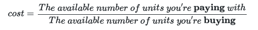

Rules Document v. 0.2 **IN PROGRESS**
Updated 2019-12-18
When playing Economicon, you assume the role of the mightiest of all bureaucrats: the central banker. Your goal is to build a stable economy and a prosperous nation.
This game is still being play tested! If you play it, please share your feedback using the play tester evaluation form.
Seriously, thank you for taking the time to play test this game... and apologies if you find it boring, frustrating or even unplayable at this early stage.
Economicon is a resource trading game based on supply and demand. When fewer resources are available, those resources become more valuable.
Any time you buy, sell or trade in Economicon, the cost of a unit changes, according to the value formula:

Say you have a pile of gold burning a hole in your reserve bank, and you need to buy 2 grain to meet your nation's consumption requirement.
There are currently 5 gold in the market, and 7 grain. So the cost for each unit of grain is 5/7 = roughly .71 gold per unit of grain. Rounding goes to the nearest .25 in Economicon, so each unit of grain cost .75 gold. You pay 1.5 gold from reserves, and the grain is yours!
The player after you had exactly the same idea: they want to spend their gold to buy 2 grain. Now there are 5 grain in the market. So when the next player goes to buy 2 grain, each unit will cost 5/5 = 1 unit of gold.
The next player will pay more because grain is now scarcer, and therefore more valuable.
By strategically buying up resources (or, inversely, flooding the market with them), you can raise or lower the value of those resources in a way that affects every player's purchasing power, and the value of the resources they already own.
Meanwhile, you and your fellow players will be trying to achieve goals both private and share. Accomplishing these goals earn you achievements that you will tally up at the end of the game to determine the winner. Failing in these objectives can result in volatility, which can count against your total achievements at the end of the game.
The player with the most achievements at the end of the game is the winner.
TODO: select a player (advantages/disadvantages for each)
Each player sets up their reserve bank in front of them.
Start with these resources in your reserve bank:
In the center of the table, set up the marketplace:
Then, each player draws an achievement card.
Last, shuffle the global event cards and select five at random. Set them aside without looking at them.
To begin, flip the first global event card. Each global event card describes a scenario, conditions for resolving that scenario, a number of rounds of trading in which to resolve the scenario, and consequences upon success or failure. During a game of Economicon, players will respond to five such global events.
After the first global event is revealed, trading begins with the player who rolls highest on a d6 (in the event of a tie for highest, the players who tied keep rolling until one rolls higher) and continuing clockwise. During each player's turn, they may do any one of the following:
Produce: Add any number of a single type of commodity to your reserves. Pay half the market value for that commodity into the market, using either your native currency or gold.
Sell: Move any number of commodities from your reserves to the market.
Buy: Purchase units of a single commodity available on the market; move them from the top of the stack in the market to your reserves. For each unit you purchase, pay the player who produced it the market value using either your native currency or gold.
Exchange: Exchange any currency or gold in your reserves for an amount of currency of equal value from the market.
Mine: Add one unit of gold to your reserves.
Print: If you have more gold than native currency in reserves, add up to the difference in native currency to your reserves.i
Draw: Forego other trades in order to draw a new achievement card. If you do, gain one volatility point.
Players may claim achievements from achievement cards at any time during trading.
Trading continues for the number of rounds indicated on the global event. Once that number of rounds has elapsed, pause to resolve the effects on the global event card. Then flip the next global event card. Each player draws a new achievement card and satisfies their consumption requirement, if able (if not, gain a volatility point). Then trading begins again.
After five global events are resolved, each player counts up their achievements, adding any bonus achievements, and subtracting any volatility points. The player with the highest total is the winner.
In the event of a tie, the player among those who tied with the most gold in reserves is the winner. If two or more tied players have the same amount of gold, the tied player with the most valuable total reserve holdings (relative to gold) is the winner.
Achievements are points players earn by succeeding at personal or public goals. The player with the highest number of achievements, minus volatility points, at the end of the game is the winner.
In addition to the achievements from global events and achievement cards, players can earn several bonus achievements after the last global event is resolved. These bonus achievements are:
TODO
There are three commodities in Economicon: grain, oil and tech.
Players can produce commodities by paying half their market value. Once you have produced commodities, you can sell them in the market, and buy other player's commodities.
Keeping commodities in your reserves is a great way to control the market, build the value of your holdings and ensure that your nation's consumption requirements are met.
Whenever a global event is resolved, the citizens of your nation will consume a number of each commodity from your reserve bank equal to the number of achievement cards you hold. When commodities are consumed in this way, discard them from play.
Each player has their own native currency, which only they can use to buy commodities on the market. However, it is possible to exchange your native currency (or gold) for another player's currency (as long as it is available in the market) and keep it in your reserve bank as a store of value.
Global event cards are drawn once at the beginning of each round, and stay in effect for the rest of the round. Global event cards describe conditions that take effect this round, a common goal for all players to meet, and consequences if the goal is or is not met by the final phase of the round.
Gold works a little differently than commodities or currency. It is mined, not created by players through production. Gold counts as a universal currency, meaning every player may use their supply of gold to pay for their purchases. Players can also peg their currency to the value of gold. The banker with the most gold in reserves gets to go first whenever order of play matters. At the end of the game, gold is the unit of currency used to determine the value of your reserve holdings.
The global marketplace is the area where produced commodities are sent to be bought and sold. Players can also use the market to exchange gold and currency during trading.
The amount of gold, currency and commodities in the marketplace determine the value of those units.
At the beginning of each round, every nation mines gold by rolling a d6, and placing that number of new units of gold into their reserves.
When relevant (e.g., during the trading phase), players take turns in order based on who has the most gold in reserves. Ties are broken by rolling dice.
During the production phase each round, players may produce commodities by paying an amount equal to 1/2 the relative market value of that commodity.
Nations may produce commodities all at once, or follow the standard order of play, as agreed upon by the group. All commodities produced are placed into that players reserves until the trading phase, when they may sell them on the market.
A nation's central reserve bank is where all gold, commodities and currencies belonging to the nation are kept.
The amount of gold held by players in their reserves determines the play order. The player whose nation has the most gold gets to go first whenever the order of play matters.
Players use gold and their native currency in reserves to make purchases in the market. When they do, they determine the relative value of their purchase and pay the according player that amount of gold or native currency from their reserves.
At the end of the game, players count up the value of all gold, commodities and currency in their reserve, relative to gold (that is, the amount of gold in the market is the numerator in the value formula). If a player has the most valuable reserves, without having three or greater volatility tokens, that player wins the game.
During the trading phase, players take turns doing one of the following actions:
Sell: Move any number of commodities from your reserves to the market.
Buy: Purchase any number of a single commodity's available units by moving them from the top of the stack in the market into reserves. Pay each player who produced commodites your puchase their market value.
Exchange: Exchange foreign currency in your reserves for your native currency (or vice versa). You can also exchange using gold.
Pass: When all players pass, the trade phase is over.
A unit refers to one token of any type of currency, commodity or gold.
As in real life, the value of a gold, commodities and currency in Economicon is relative, based on supply and demand. The more scarce something is, the more you can expect to pay for it.
Using a currency peg is a way to assign a value for your currency other than its inherent scarcity. When using a peg, your currency is exactly as valuable as the unit you have pegged it to.
When determining how much a commodity costs in Economicon, use the following formula:
Say you have a pile of gold burning a hole in your reserve bank, and you need to buy 2 grain to meet your nation's consumption requirement this turn.
There are currently 5 gold in the market, and 7 grain. So the cost for each unit of grain is 5/7 = roughly .71 gold per unit of grain. Rounding goes to the nearest .25 in Economicon, so each unit of grain cost .75 gold. You pay 1.5 gold from reserves, and the grain is yours!
The player after you had exactly the same idea: they want to spend their gold to buy 2 grain. Now there are 5 grain in the market. So when the next player goes to buy 2 grain, each unit will cost 5/5 = 1 unit of gold.
The next player will pay more because grain is now scarcer, and therefore more valuable.
If you're paying with your native currency, and that currency is pegged to the value of another unit, count that unit in the marketplace instead of your currency when using the value formula.
Rounding: Always round to the nearest .25.
There are three situations in which you may earn a volatility token:
1. If your nation fails to meet the production or consumption requirement
2. If you fail to comply with your nations laws
3. Based on your response to global events
You can remove one volatility token per round during your upkeep phase if you comply with all requirements and laws. Certain global events can also result in the removal of volatility tokens.
What did you think? Please take a moment and fill out the play tester evaluation form
This version of the Economicon rules document is licensed under the Open Game License (OGL), which grants "permission to modify, copy, and redistribute" the information here, provided you follow the rules for share-alike and derivative works. Also, if you do modify, copy or redistribute this game, please let me know! Email contact@blake-cooper.com